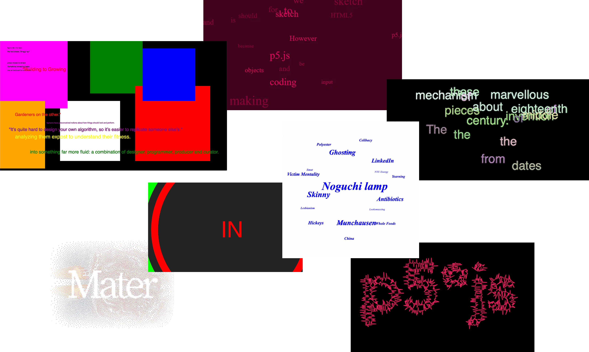
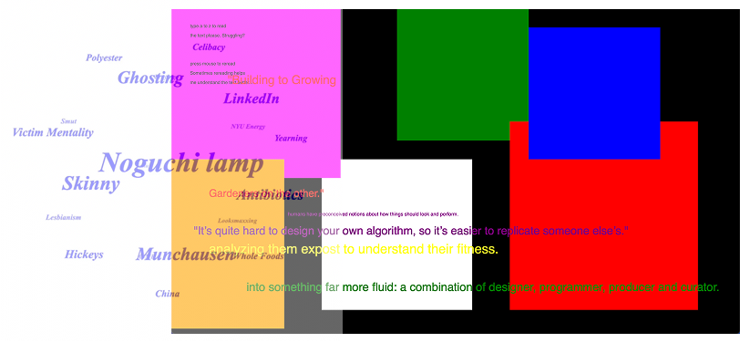
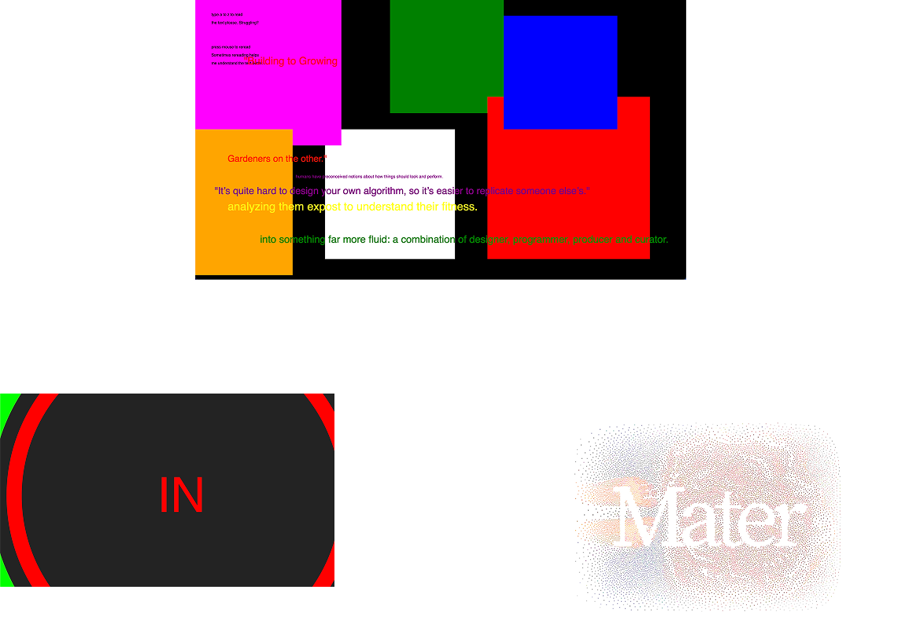

FILE: WEEK 9
HUNTNGATHER

LASER MICE DYAD is an updated version of So Kanno’s previous work, Lasermice. It is a swarm of 60 small robots inspired by the synchronous behaviour of insects like fireflies. Each robot has a solenoid (taps floor), a vibrating motor (rings bell) and red and green lasers. When a robot detects a colour (red or green), it will become the same colour and emit the corresponding sound. Green and the sound of blow are linked and red and sound of the bell are linked. This creates an audiovisual experience of the transition between states. Dyad means two or a pair.

OMNIA PER OMNIA is a series of collaborative drawing performances between Sougwen Chung and a swarm of custom-designed drawing robots. Each painting performance is 9 minutes in length and entirely improvised to showcase a process of human & robotic co-creation. The performance reimagines the tradition of landscape painting as collaboration between artist, swarm and city. Omnia per Omnia is a continuation of a long-term project by Sougwen exploring human & robotic collaboration. This project saw the “evolution of robotic form from singular to collective”.
SIX FORTY by Four-Eighty by Jamie Zigelbaum and Marcelo Coelho, is an interactive lighting installation composed of an array of 220 magnetic, physical pixels. The pixel tiles change their colour in response to touch and can also be altered by remote control. When grouped, the pixel tiles create patterns and animations which could serve as tool for customising physical spaces. The installation makes pixels physical to draw focus to their materiality and the possibility of similar future design forms.
SEMINAR

DRAWBOT V1, SENSILAB, 2018

MIMICRY, SOUGWEN CHUNG, 2015
Nonhuman drawing machines are an example of physical computing that attempts to imitate human behaviour. Sketching and drawing is not usually done with full certainty or strokes. There is human hesitation in drawing which it makes it difficult to imitate. Direct algorithms will be too precise too perfect to be human, so more experimental approaches must be considered. How do show organic creativity through machines?
WAIT WOT
This week, we learned how to connect p5 and Arduino. This opens up the opportunity tp use each other as input and explore a new dimension of the both. Which could potentially be applied to my final project.

CONNECTING TO P5
-

Arduino
-

Potentiometer
FINAL PROJECT
PITCH
A web application designed as a stereotypical todo list, where users can input tasks to make a list. BUT when an unknown threshold (number of tasks, characters, etc) is reached, the website becomes overwhelmed and begins to "go crazy" simulating brain fog and overwhelm. It can only stop when you calm the computer and yourself.
HYPOTHESIS
We often expect too much from ourselves, setting unrealistic expectations and goals that result in dissapointment.
What if we were confronted with the reality of our capacities? Would be more considerated of ourselves? Kinder? Learn to manage our stress better?
INSPIRATION

APPROACHES
OVERLAPPING EFFECTS
RANDOM TRANSISTIONS
